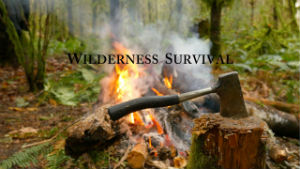
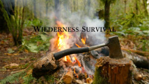

My name is Noah Breitmaier. I am currently a student at the University of Rhode Island. My hope is to graduate with a
Bachelors of Science in Computer Science. I was an electrician for 7 years before this and have my Associates Degree in
Electrical Technologies from the New England Institute of Technology. I was also in the U.S. Army for 2 years, followed by
5 years in the United States Marine Corps. I would say my hobbies mostly include gaming and wilderness survival.
 
